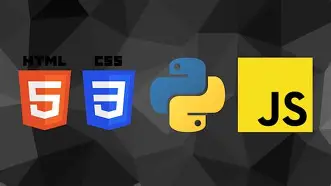

Technical Growth
Web, database and business-system development.
An ICT professional specializing in web development, database administration and business software — reinforced by a disciplined, Level IV-certified foundation and a security, CCTV and communication-systems background.

TECH STACKHTML · CSS · JS · PHP · Node.js · SQLMy profile combines web development, database administration and business-system design with a disciplined operational background in security, physical protection, radio and data communication, leadership and structured team coordination.
Web, database and business-system development.
Alert, structured and procedure-driven execution.
Integrity, accountability and continuous learning.
I recorded this short introduction myself — who I am, the ICT work I take on today, and the disciplined security and technical training behind me. No script-reading feel, just a straight, honest walkthrough.
Technical capability backed by discipline, communication and operational experience.
Full-stack development — responsive interfaces and business applications with HTML, CSS, JavaScript, PHP and Node.js/React.
SQL/MySQL, relational data, database integrity, backup/recovery concepts and integration.
Designing payroll, HR and business-management platforms — multi-tenant architecture, role-based access and Ethiopian tax/pension compliance.
Radio and data communication environments, monitoring and operational communication support.
Security operations, surveillance awareness, access control, emergency response and responsible information handling.
Team coordination, operational readiness, responsibility and structured execution.
A second line of work: on-site and remote computer support for individuals, small businesses and organizations around Addis Ababa, under the WG IT Support brand.
Windows 10/11 installation, MS Office setup, driver installation and system updates.
Driver installation, configuration and network printer sharing with full troubleshooting.
Virus and malware removal, performance optimization and general system upkeep.
Router and switch setup, network security and reliable internet connectivity.
Camera setup, remote access configuration and mobile monitoring — linked directly to the security background above.
Fast, professional and trusted support — call, WhatsApp or Telegram.
Commercial-grade software products and technical systems built for the Ethiopian market.
Windows app for Amharic/Ge'ez typing and offline speech-to-text, built with Electron and native Windows components.
Full-stack web platform for Ge'ez/Amharic transliteration, speech recognition and translation (PHP/Laravel, MySQL).
GPS fleet tracking system built for an organizational client, using Node.js, PostGIS and React.
Line of commercial Excel products for Ethiopian organizations — inventory & stock control, payroll, tax and pension calculators.
Encrypted desktop messaging application with AES-256-GCM encryption and role-based access, built with Electron.
Full-stack online Bingo platform with wallet, referral and leaderboard systems, and Telegram-bot OTP authentication (PHP/MySQL).
Selected qualifications and certificates from the supplied career documents.
General Wingate Polytechnic College
Web Development & Database Administration · Ministry of Labor and Skills
Hikvision Certified Security Associate (HCSA-CCTV) · Dahua Basic Product Knowledge
Web Development & Database Administration · General Wingate Polytechnic College
Programming Fundamentals · Data Analysis · Android Development · SQL · Python · HTML
Radio/Data Communication · Commando/Command Training · Communication Systems
Certificate of Participation for support to USARAF / Southern European Task Force (SETAF) during a multinational military exercise
Available for ICT and software development roles, technical support and technology-enabled business projects — backed by a disciplined security and operations background.